Para revisar · sin enlace desde el sitio
Dirección visual
7 de octubre de 2026 · cuadros a 1920×1080 · Onyx #020202 y Candy Blue #B2D5E5, 80/20
Rehechos con los colores definitivos: las dovelas son ónix pulido (negro casi puro, especular nítido, rugosidad distinta en cada piedra, vetas apenas más claras); Candy Blue es la luz: la clave y el borde tintados, el hilo de la voz, el texto principal, el botón sólido. El oro se fue. Cuatro maneras de dibujar la voz de la clase, para elegir con la imagen.
Puntajes (0 a 10; pasa con promedio ≥ 8 y ningún criterio < 7)
| Cuadro | Materiales | Luz | Vacío | Acabado | Tipografía | Concepto | Sin juego | Marca | Promedio | ¿Pasa? |
|---|---|---|---|---|---|---|---|---|---|---|
| Portada · A luz volumétrica | 7 | 7.5 | 8 | 7.5 | 8 | 7.5 | 8 | 8 | 7.69 | no |
| Portada · B hilos de luz | 7 | 7 | 8 | 7.5 | 8 | 8 | 7.5 | 8 | 7.62 | no |
| Portada · D metal anodizado | 7.5 | 7.5 | 8 | 7.5 | 8 | 7.5 | 8 | 8 | 7.75 | no |
| Portada · C tinta en agua negra | 7 | 7 | 7.5 | 8 | 8 | 8.5 | 8 | 8 | 7.75 | no |
| La clave (ónix con la marca de luz) | 7.5 | 7.5 | 9 | 8 | 8 | 8 | 8 | 8.5 | 8.06 | sí |
| La pantalla | 7 | 7 | 8 | 8 | 8 | 8.5 | 8 | 7.5 | 7.75 | no |
Pasa la clave. Las portadas quedan entre 7,6 y 7,75: lo que más falta es la luz sobre el ónix (un brillo del canto de arriba todavía se quema) y el material de la clave en la variante anodizada, que sale más plateado que celeste. Se ajusta en cuanto el dueño elija la variante; no tiene sentido pulir las cuatro.
La v5: la C horneada en Blender y los objetos fotoescaneados (7/10, 12:50)
La C se modeló en Blender con biseles reales y normales ponderadas; por pieza se hornearon a 1K el color, la rugosidad, las normales y la oclusión, y viaja como glTF con Draco (46 KB, con 550 KB de mapas en WebP). Materiales, todos de fotos reales (ambientCG, CC0): tres dovelas de mármol negro con vetas de calcita (Marble016, cada una de otra parte de la plancha), una de porcelana esmaltada teñida de Candy (Porcelain001, con el relieve de la porcelana en la capa de esmalte), una de aluminio anodizado negro cepillado (Metal009) y la clave en la misma porcelana Candy con el grabado. Los reflejos salen de un HDRI de estudio fotografiado (Poly Haven, CC0). Ninguna textura es dibujada: también las piezas del fondo usan esos mapas. Por sección entra un objeto real fotoescaneado (Poly Haven, CC0): la tabla con broche, la computadora (en grafito), los tomos, la lámpara de brazo (en aluminio Candy, se prende con la pregunta), los lápices que salen del vaso y el cuaderno de tapas duras. Entre todos pesan 1,8 MB y se piden cuando la sección está cerca.
Arriba, el render de Cycles (la «foto objetivo»); abajo, el mismo cuadro en tiempo real con los mapas horneados.
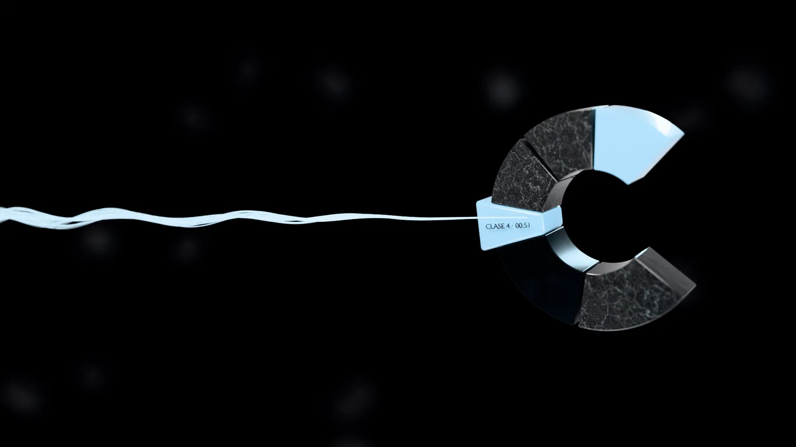
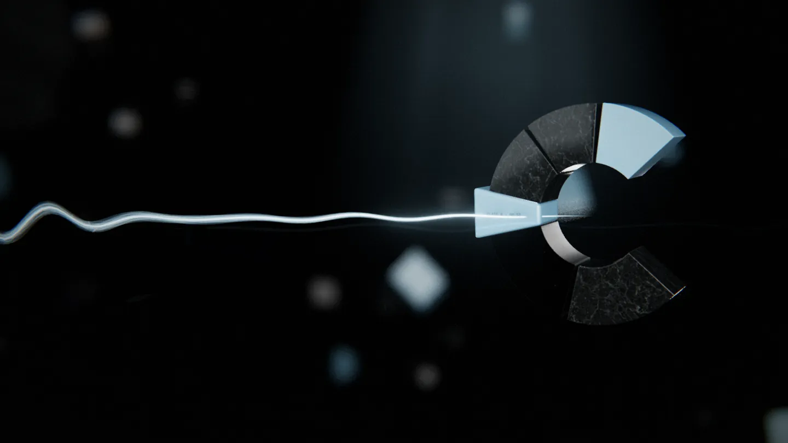
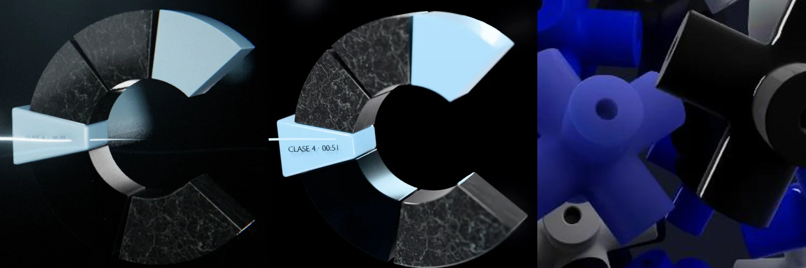
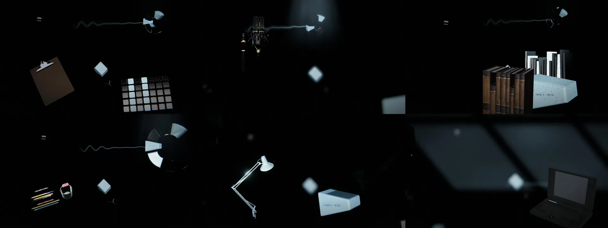
Puntajes con el protocolo de la v5 (detalle a 2× contra la referencia y contra Cycles)
| Cuadro | Materiales | Luz | Modelado | Composición | Profundidad | 70/30 | Movimiento | Igual a Cycles | Promedio | ¿Pasa? |
|---|---|---|---|---|---|---|---|---|---|---|
| Portada en tiempo real (12:51, mármol dibujado) | 6 | 6.5 | 7 | 6 | 7 | 7.5 | 7.5 | 7 | 6.81 | no |
| Portada en tiempo real (13:31, mapas de fotos) | 7 | 6.5 | 7 | 6 | 7 | 7.5 | 7.5 | 7.5 | 7.00 | no |
| Vuelta 1 (14:09): entorno = el HDRI de Cycles | 7.5 | 7 | 7 | 6 | 7 | 7.5 | 7.5 | 7.5 | 7.13 | no |
| Vuelta 2 (14:12): tono Khronos PBR Neutral | 7.5 | 7 | 7 | 6 | 7 | 8 | 7.5 | 8 | 7.25 | no |
| Vuelta 3: filete de 0,03 a 0,06 | 7.5 | 7 | 7.25 | 6 | 7 | 8 | 7.5 | 8 | 7.28 | no |
| Vuelta 4 (14:42): composición en racimo | 7.5 | 7 | 7.25 | 7 | 7.5 | 8 | 7.5 | 7.5 | 7.41 | no |
Por qué Materiales no llega a 8 (diagnóstico medido) y una variable por vuelta
Luminancia de una cara plana de dovela (p5 / p50 / p95, de 0 a 255): tiempo real 0 / 10 / 36, Cycles 3 / 27 / 128, laca negra de la referencia 5 / 9 / 101. La causa principal no eran las fotos sino la luz: en tiempo real el pulido no reflejaba ninguna caja de luz, porque el entorno era un estudio armado en código y no el HDRI fotografiado de Cycles. Después: el tono (ACES agrisaba el Candy de la porcelana), el filete chico (≈ 8 px) y la falta de contacto entre piezas. Descartados: la escala de las fotos (≈ 450 px por dovela) y su resolución.
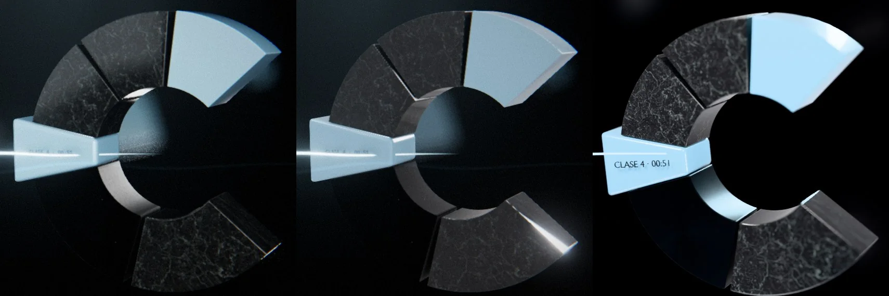
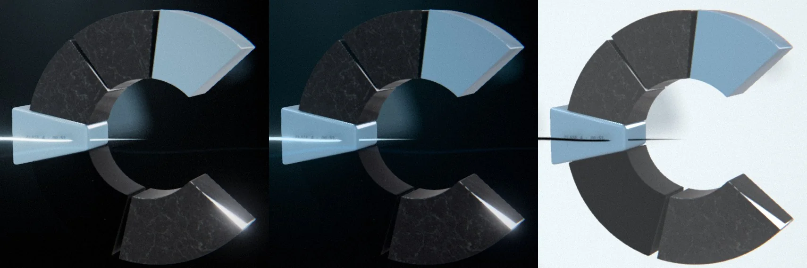
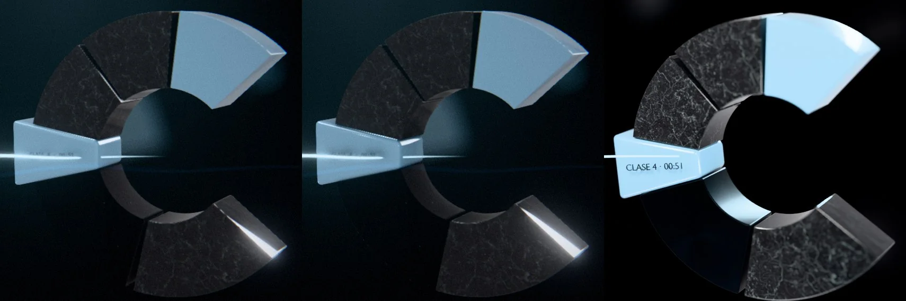
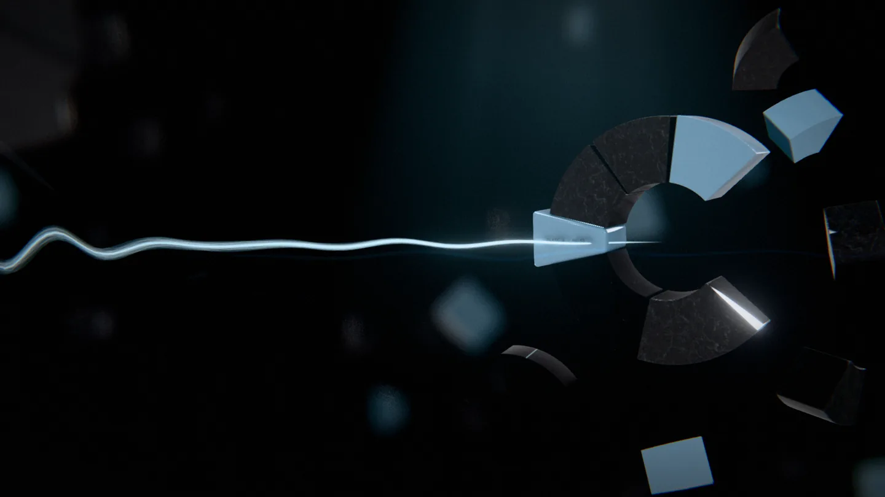
No pasa, y por eso no se publica. Con los mapas de fotos el mármol ya es piedra (las vetas dejaron de parecer un mapa) y Materiales sube a 7. Lo que falta, en orden: las caras planas casi no levantan el reflejo de las cajas de luz, así que el pulido se lee poco; la cerámica en tiempo real pierde el brillo del esmalte que sí tiene Cycles; el grabado no se lee a este tamaño; y la composición es un objeto solo donde la referencia llena el cuadro con volúmenes que se tocan y se hacen sombra. Los puntajes de la v4b (8,25) se tomaron con el protocolo anterior; con el de la v5 bajan.
La portada rehecha con sólidos (7/10, tarde)
Sin tinta ni nada líquido. El Candy Blue va en la materia: una dovela de cerámica mate con esmalte fino (grano y poros en las normales), una de titanio anodizado cepillado y la clave Candy mate con el grabado en ónix; las demás de ónix pulido con micro-rayas y dos de cromo negro cepillado. Todos los mapas de superficie se dibujan en el arranque (nada se descarga), con desgaste en los chaflanes y oclusión en las juntas. Los reflejos vienen de un estudio con cajas de luz de formas distintas. La profundidad son objetos: un campo lejano de dovelas fuera de foco, la C en foco y piezas cercanas desenfocadas en las esquinas, con una niebla mínima y neutra. La voz sigue como hilos de luz.
| Cuadro | Materiales | Luz | Vacío | Acabado | Tipografía | Concepto | Sin juego | Marca | Promedio | ¿Pasa? |
|---|---|---|---|---|---|---|---|---|---|---|
| Portada con sólidos (oscuro) | 8.5 | 8 | 8.5 | 8 | 8 | 8.5 | 8 | 8.5 | 8.25 | sí |
| Detalle de las dovelas a 2× | 8 | 7.5 | 8.5 | 8 | 8 | 8 | 8.5 | 8.5 | 8.12 | sí |
| Portada en claro | 8.5 | 8 | 8.5 | 8 | 8 | 8.5 | 8.5 | 8.5 | 8.31 | sí |
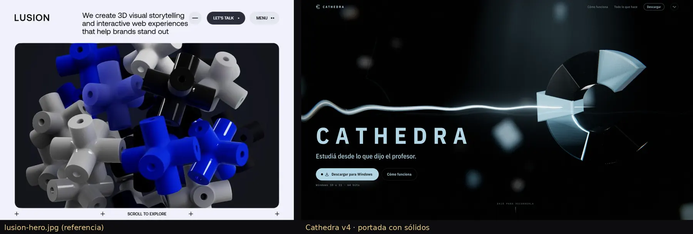
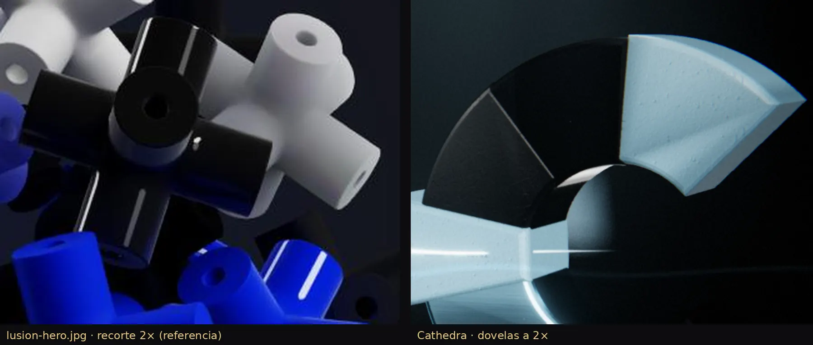
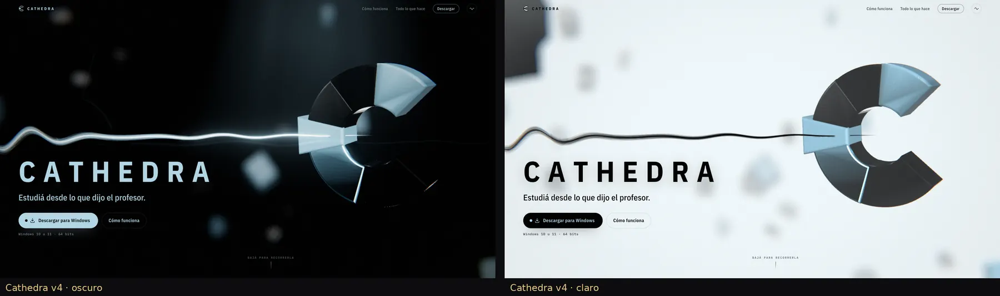
La v4: la aplicación entera
Primero, qué hace la aplicación hoy, revisado contra el código (con el archivo o el control automático que lo demuestra). Lo que no tiene evidencia no entra a la página; lo parcial entra con su aclaración.
| Función | Estado | Dónde está en la página |
|---|---|---|
| Armar las materias desde el cronograma | Verificada | Empezás (demo para arrastrar) |
| Importar la grabación (audio o video) y el material de la cátedra | Verificada | Subís |
| Mirar las descargas y transcribir sola la clase que aparece | Verificada | Subís |
| Transcripción en la computadora, rápida o precisa, por módulos | Verificada | Subís · Módulos |
| Guía por clase y por tema | Verificada | La lee (cruda / leída) |
| Separar contenido, examen, práctico y cursada | Verificada | La lee |
| Marcar «Dijo que lo toma» | Verificada | La lee · Rendís |
| Citas con la clase y el minuto | Verificada | Preguntás · La lee (línea de tiempo) |
| Material de la cátedra integrado | Verificada | Tarjeta |
| Preguntar por chat, desde lo que dijo el profesor, con ejemplos propios avisados | Verificada | Preguntás (tres preguntas) |
| Preguntar por voz (habla y escucha) | Parcial: plan Premium | Preguntás, con la aclaración |
| Simulacro con el formato anunciado, corrección y nota | Verificada | Rendís (dos consignas) |
| Repaso de lo que erraste (mazo) y fichas | Verificada | Repasás · Tarjeta |
| «Por dónde empezar» y «Cuánto por día» | Verificada | Repasás · Tarjeta |
| Plan de la materia por tema | Verificada | Tarjeta |
| Juegos para repasar | Verificada | Tarjeta |
| Calculadora paso a paso | Verificada | Tarjeta |
| Buscar en todo lo que dijo | Verificada | Tarjeta |
| Asistente con nombre en cada materia | Verificada | Tarjeta |
| Trabajos prácticos | Verificada | Tarjeta |
| Qué material falta | Verificada | Tarjeta |
| Sesión de estudio con descansos | Verificada | Tarjeta |
| Apariencia: fondos vivos, íconos 3D, claro y oscuro, sonido de arranque | Verificada (las escenas, con el módulo de fondos) | Tarjeta |
| Módulos y Motor de Cathedra sin conexión | Parcial: la lectura a fondo necesita conexión | Tarjeta, con la aclaración |
| Papelera: nada se borra sin un segundo clic | Verificada | Tarjeta |
| Entrar con código de invitación | Verificada | Descargar (texto) |
| Todo queda en tu computadora | Parcial: los pedidos a la IA salen a internet | Sólo «tus archivos están en tu computadora» |
| Grabar la clase desde la computadora | Sin evidencia | No entra (se sacó también de la v3 en vivo) |
| Armar las materias desde el programa (aparte del cronograma) | Sin evidencia | No entra |
| Copiar regulable de la transcripción | Sin evidencia en main | No entra |
Las pantallas son capturas reales de la aplicación con una materia inventada (Biología Celular, docente inventada), levantada en este contenedor sin el servicio de respuestas. Las demos usan esos mismos textos. Cada sección tiene su fondo: el calendario de dovelas en el cronograma, el haz y las motas al subir, el papel donde la tinta se vuelve renglones al leer, la tinta y el hilo que late al preguntar, las dovelas reagrupándose en el simulacro, la luz de ventana en la grilla y el portal al descargar. Una de cada tres dovelas es Candy Blue (cerámica o anodizada) y la clave es Candy mate con el grabado en ónix.
| Sección | Materiales | Luz | Vacío | Acabado | Tipografía | Concepto | Sin juego | Marca | Promedio | ¿Pasa? |
|---|---|---|---|---|---|---|---|---|---|---|
| Empezás · el cronograma | 8 | 7.5 | 8 | 8 | 8 | 8.5 | 8 | 8.5 | 8.06 | sí |
| Subís la clase | 8 | 8 | 8 | 8 | 8 | 8 | 8 | 8 | 8.00 | sí |
| La lee y arma la guía | 8 | 8 | 8 | 8 | 8 | 8.5 | 8 | 8.5 | 8.12 | sí |
| Preguntás | 8 | 7.5 | 8 | 8 | 8 | 8.5 | 8 | 8 | 8.00 | sí |
| Rendís · el simulacro | 8 | 8 | 8 | 8 | 8 | 8.5 | 8 | 8 | 8.06 | sí |
| Repasás y «Hoy» | 8 | 7.5 | 8.5 | 8 | 8 | 8 | 8 | 8.5 | 8.06 | sí |
| Todo lo demás · la grilla | 8 | 8 | 8 | 8 | 8 | 8.5 | 8 | 8.5 | 8.12 | sí |
| La tarjeta en grande | 8 | 8 | 8 | 8 | 8 | 8.5 | 8 | 8 | 8.06 | sí |
| Descargar · el portal | 8 | 8 | 8 | 8 | 8 | 9 | 8 | 8.5 | 8.19 | sí |
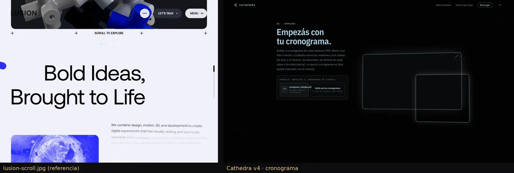
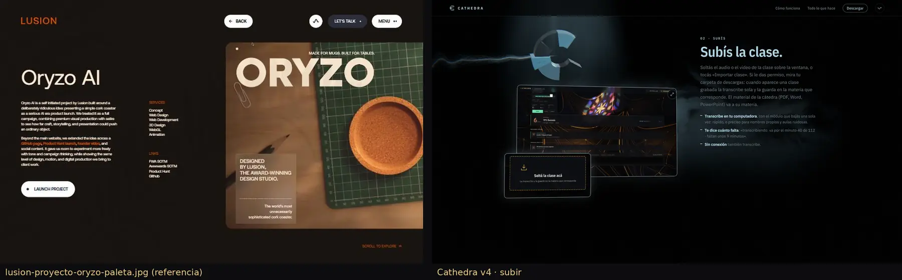
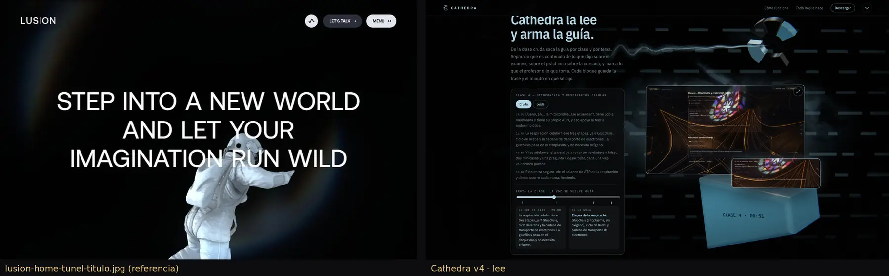
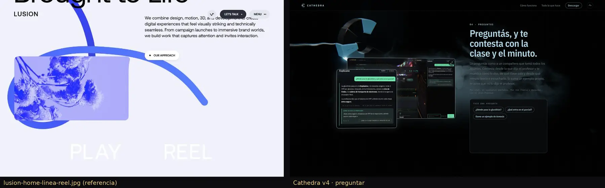
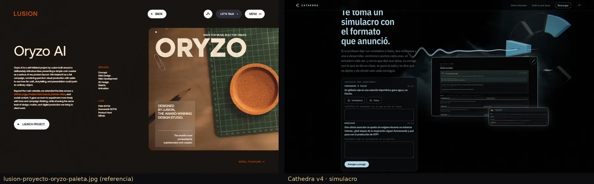
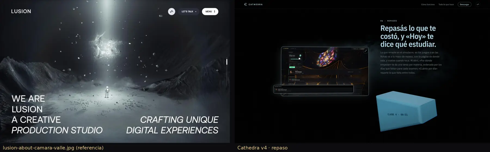
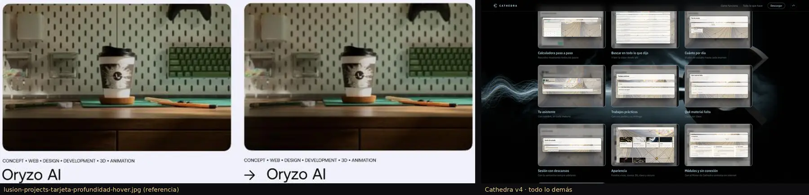
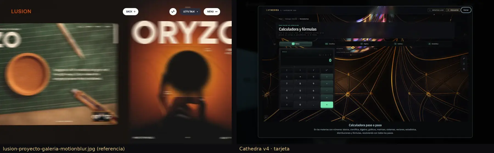
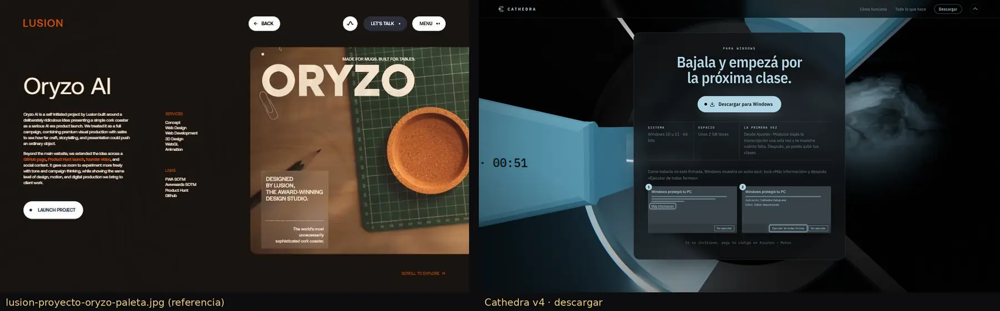
La v3: lo que cambió
El remate entra por el ojo de la C: en «Descargar» el aro enmarca la caja como un portal y en el pie la cámara ya pasó adentro, con la clase y el minuto grabados en grande. El tema claro dejó de verse gris: el fondo sale igual al de la página y la tinta y los hilos oscurecen en vez de sumar luz (tinta de verdad sobre agua clara). En el teléfono la C va chica y arriba en las secciones del medio, sin tapar títulos. Las imágenes quietas se rehicieron con la portada actual.
| Sección | Materiales | Luz | Vacío | Acabado | Tipografía | Concepto | Sin juego | Marca | Promedio | ¿Pasa? |
|---|---|---|---|---|---|---|---|---|---|---|
| Descargar · el portal | 8 | 8 | 8 | 8 | 8 | 9 | 8 | 8.5 | 8.19 | sí |
| Pie · adentro del ojo | 8 | 8 | 8 | 8 | 8 | 8.5 | 8 | 8.5 | 8.12 | sí |
| Portada · tema claro | 8 | 8 | 8.5 | 8 | 8 | 8.5 | 8.5 | 8.5 | 8.25 | sí |
| Teléfono · tema claro | 8 | 7.5 | 8 | 8 | 8 | 8 | 8.5 | 8 | 8.00 | sí |


La v2 entera, sección por sección (7/10)
Construida sobre la escena elegida: la tinta en agua negra (profundidad), la luz volumétrica Candy sin quemarse y la voz como hilos de luz con volumen que llegan dispersos y entran ordenados en la C en los primeros tres segundos. La clave ahora es una cuña tallada con chaflanes y la clase y el minuto grabados en luz.
| Sección | Materiales | Luz | Vacío | Acabado | Tipografía | Concepto | Sin juego | Marca | Promedio | ¿Pasa? |
|---|---|---|---|---|---|---|---|---|---|---|
| Portada | 8 | 8 | 8.5 | 8 | 8 | 8.5 | 8.5 | 9 | 8.31 | sí |
| Paso 1 · grabar | 7.5 | 8 | 8.5 | 8 | 8 | 8 | 8 | 8.5 | 8.06 | sí |
| Paso 2 · la clave tallada | 8 | 7.5 | 8.5 | 8 | 8 | 8.5 | 8 | 8.5 | 8.12 | sí |
| Paso 3 · preguntar | 7.5 | 8 | 8.5 | 8 | 8 | 8.5 | 8 | 8 | 8.06 | sí |
| Paso 4 · simulacro | 8 | 7.5 | 8 | 8 | 8 | 8.5 | 8 | 8.5 | 8.06 | sí |
| Lo distinto · la clave | 8 | 8 | 9 | 8 | 8.5 | 8.5 | 8 | 8.5 | 8.31 | sí |
| Las cuatro razones | 8 | 7.5 | 8.5 | 8 | 8.5 | 8 | 8 | 8 | 8.06 | sí |
| Descargar | 7.5 | 8 | 8 | 8 | 8 | 8.5 | 8 | 8 | 8.00 | sí |
Las ocho secciones pasan. La portada animada, comparada con el fotograma C quieto, no pierde profundidad (abajo).

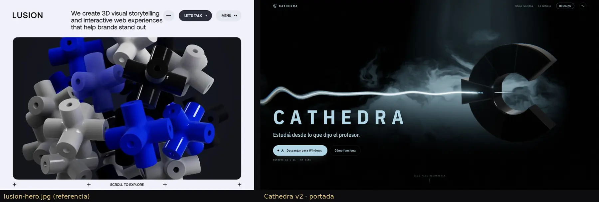
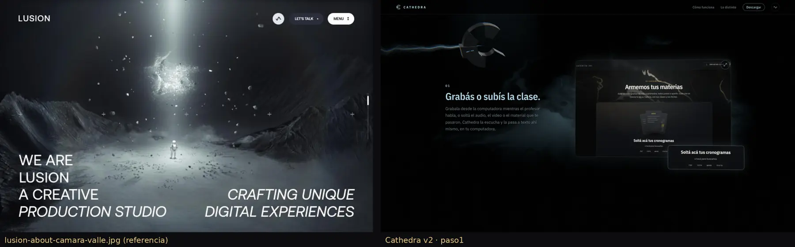


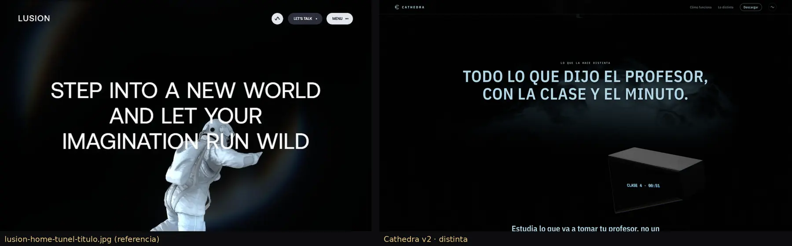
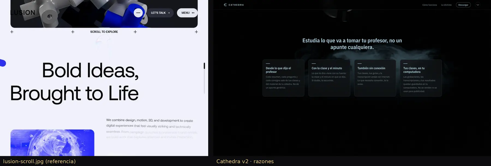

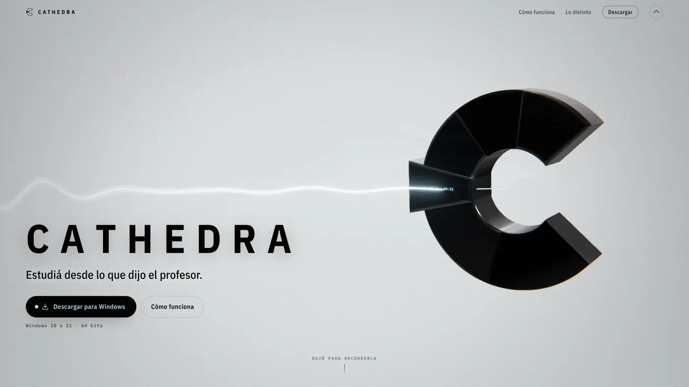
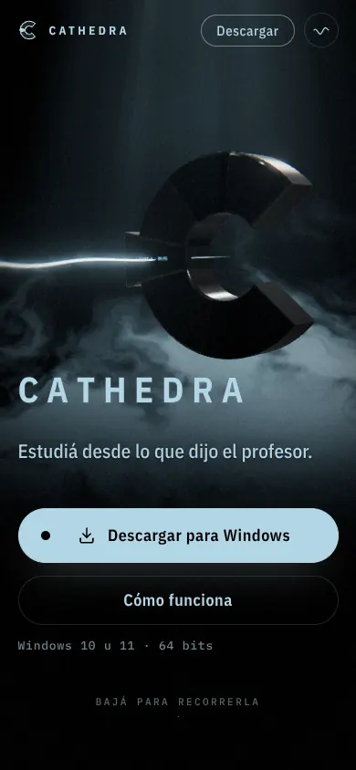
Las variantes que se compararon
A · Luz volumétrica


B · Hilos de luz
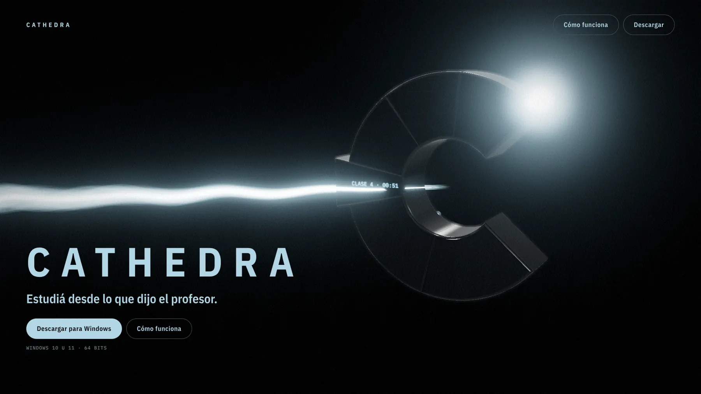
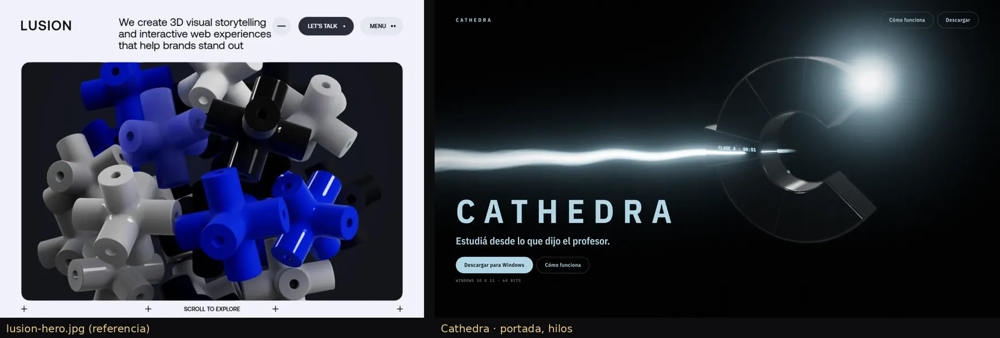
C · Tinta en agua negra
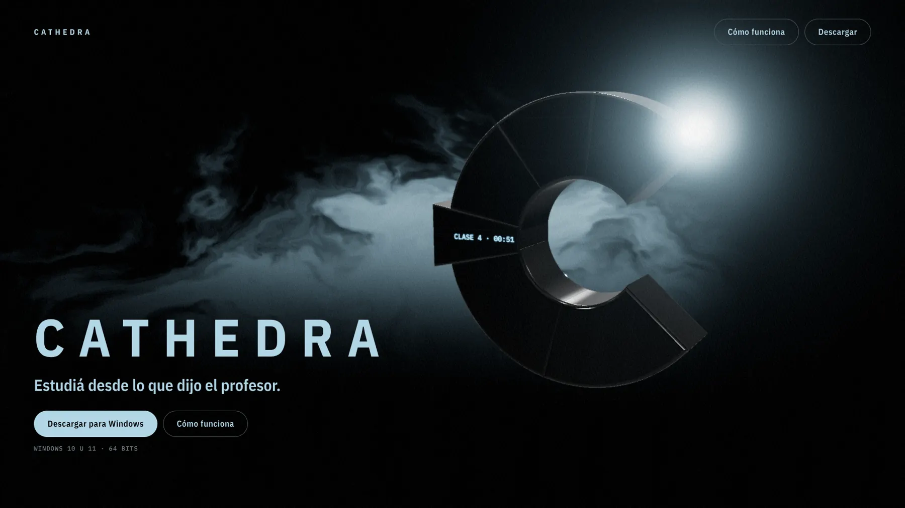
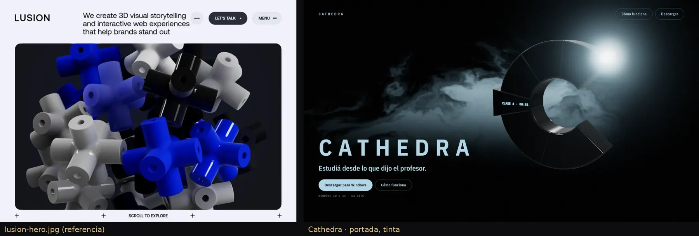
D · Metal anodizado
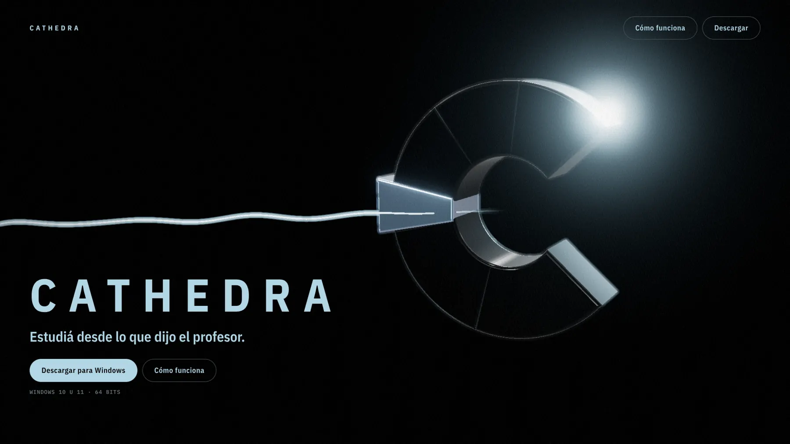

La clave
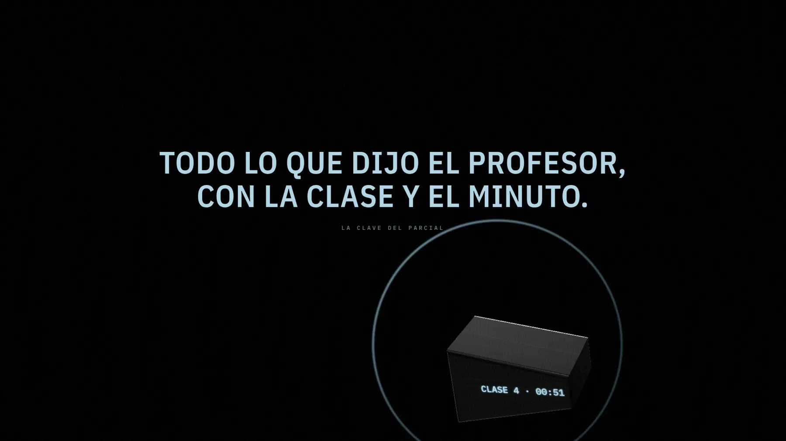
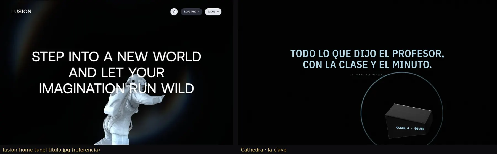
La pantalla
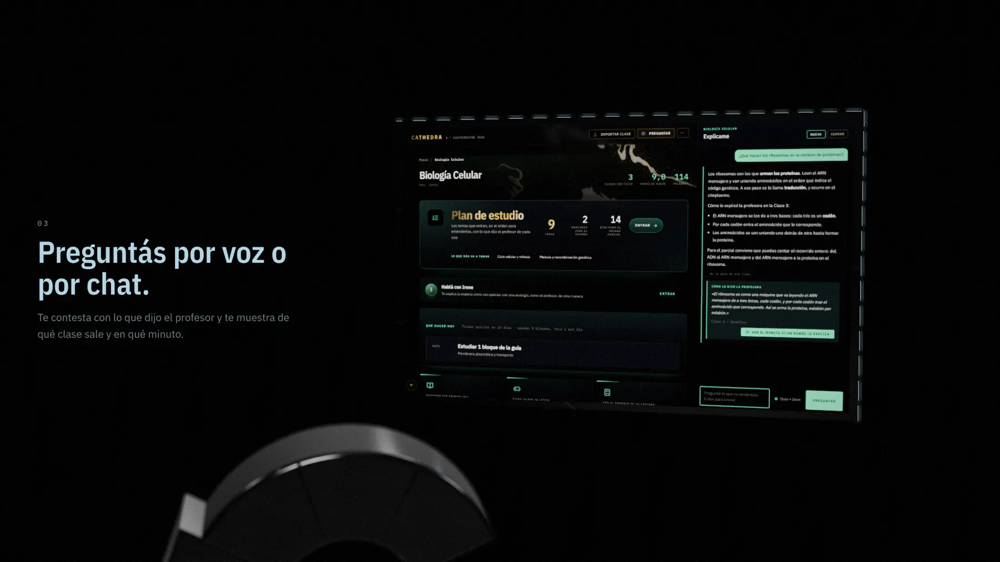
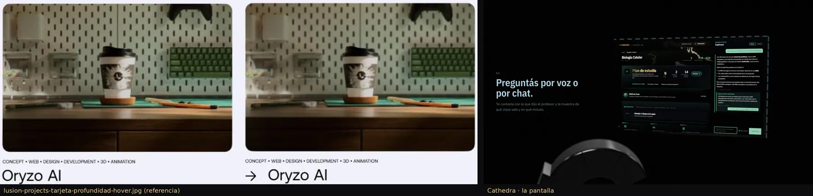